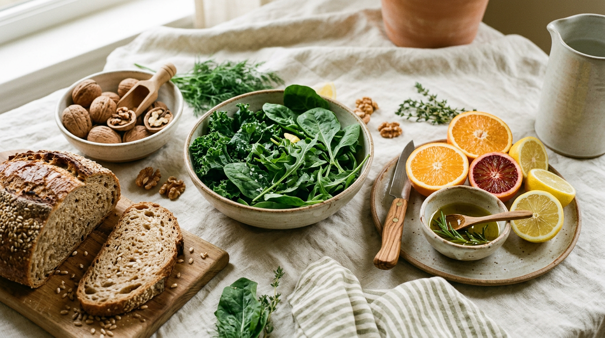
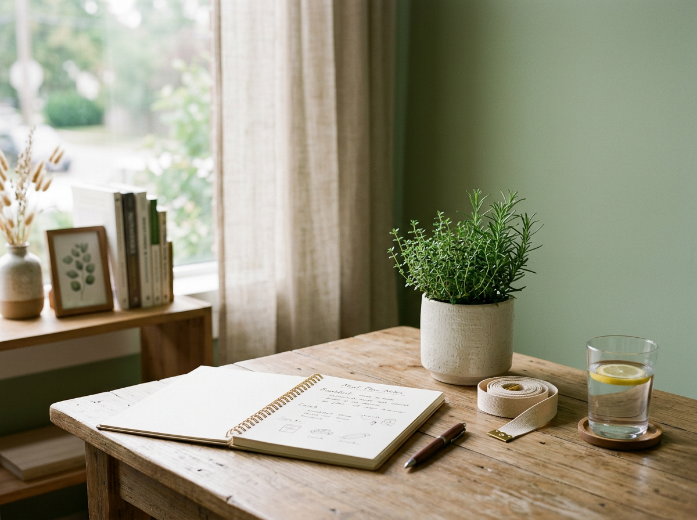

Minutrisalud te acompaña por videollamada con equipo médico y nutricionistas: valoración, plan personalizado y seguimiento cercano. También disponible de forma presencial si lo prefieres.

Cada plan nace de una valoración real de tu salud, no de tablas genéricas.
Historia clínica, composición corporal y hábitos, para entender tu punto de partida real.
Alimentación adaptada a tu diagnóstico, tus gustos y tu rutina — nada de dietas de plantilla.
Revisiones periódicas con indicadores objetivos para ajustar el plan según tu evolución.
Detrás de cada recomendación hay criterio médico: se tienen en cuenta tus antecedentes, tu medicación y tus analíticas, coordinando la alimentación con el resto de tu cuidado — todo por videollamada, sin desplazamientos.

Eliges cita por videollamada (o presencial si lo prefieres) según tu disponibilidad.
Revisamos tu historia clínica, hábitos y objetivos con calma.
Recibes un plan de alimentación personalizado y comprensible.
Ajustamos el plan en revisiones periódicas según tu progreso.
Desde un plan generado al instante hasta la valoración conjunta con nutricionista y médico. Puedes empezar por el más sencillo y subir de nivel cuando lo necesites.
Autogestionado, sin intervención profesional salvo que lo solicites
Introduces tus datos y la web genera tu plan al instante
Ver detallesTeleconsulta con nutricionista, incluye dietas especiales
Seguimientos desde 30 € · celiaquía, alergias e intolerancias sin coste adicional
Ver detallesValoración conjunta cuando el caso necesita más precisión
Seguimientos desde 49 € · nutricionista y médico internista coordinados
Ver detallesPrecios orientativos 2026, a confirmar por el equipo antes de publicarse de forma definitiva. Ver todos los planes y qué incluye cada uno →
“Un plan de alimentación solo funciona si se entiende por qué se recomienda y se ajusta a la vida real de cada paciente.”
Filosofía de trabajo — MinutrisaludIdeas prácticas de alimentación, movimiento y descanso, explicadas con criterio médico.
Cómo construir un plato equilibrado sin contar calorías.
Cuánta actividad física es realmente recomendable cada semana.
Por qué dormir bien influye tanto en tu peso como en tu ánimo.
Reserva tu primera valoración y recibe un plan pensado para tu salud, no para una talla.